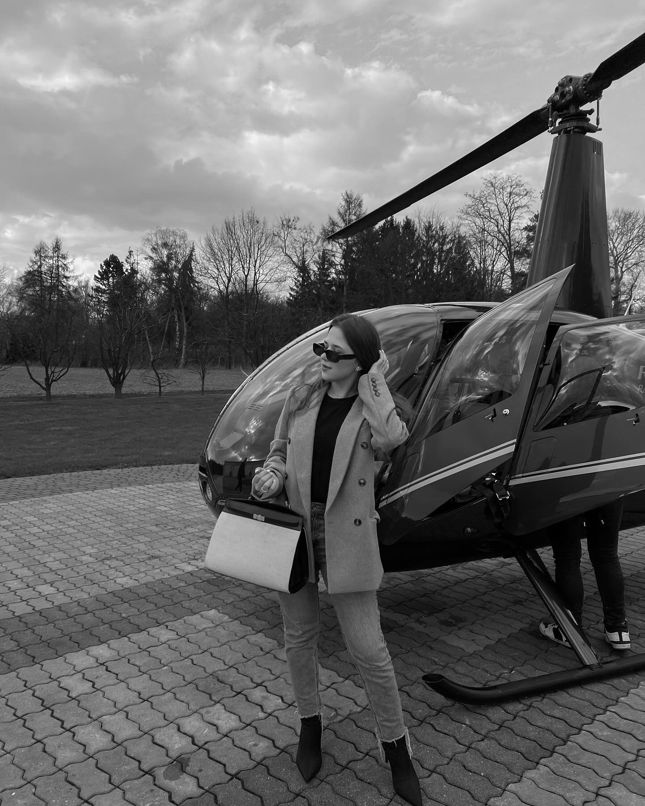

Filmy UGC
Unboxing, prezentacje produktów, codzienne rytuały i historie lifestyle. Format i przekaz dopasowane do briefu.
Tworzę estetyczny content dla marek beauty, fashion i lifestyle. Pokazuję produkt jako naturalną część codziennego życia.


Cześć, jestem Anastasiia. Mieszkam w Warszawie i tworzę zdjęcia oraz filmy dla marek beauty, fashion i lifestyle.
Lubię pokazywać produkty w codziennym życiu: torebkę na spacerze po mieście, kosmetyki podczas porannej pielęgnacji, ulubione dodatki jako część stylizacji.
Pracuję z polskimi i międzynarodowymi markami. Od unboxingu po pokazanie produktu w użyciu — dobieram format do Twojego pomysłu i stylu marki.
Lubię naturalne światło, przemyślane kadry i detale, którym chce się przyjrzeć. To z nich buduję swoje zdjęcia i filmy.
Tekstury, ruch i codzienne rytuały. Różne historie, których sercem jest produkt i jego charakter.
Fotografia produktowa i naturalne ujęcia z produktem. Kliknij zdjęcie, aby zobaczyć je z bliska.
Torebka — w rytmie miasta. Kosmetyki — w codziennym rytuale. Produkt — w życiu, którego chce się doświadczyć.
Od pierwszego pomysłu po ostatni kadr — z uwagą na styl i cele marki.
Unboxing, prezentacje produktów, codzienne rytuały i historie lifestyle. Format i przekaz dopasowane do briefu.
Detale produktów, tekstury i kompozycje. Estetyczne zdjęcia do mediów społecznościowych i komunikacji marki.
Pionowe filmy z różnymi pomysłami i otwarciami. Treści na kanały marki i do kampanii reklamowych.
Rozmawiamy o produkcie, celach, odbiorcach i oczekiwanym efekcie.
Uzgadniamy koncepcję, przekaz i szczegóły przyszłych treści.
Tworzę materiały z uwagą na światło, detale i styl marki.
Przekazuję finalne pliki. Format, terminy i prawa ustalamy wcześniej.
Pakiety do różnych potrzeb. Zakres, prawa do wykorzystania i terminy ustalamy zgodnie z briefem.
Do przetestowania produktu lub dodania jednego autentycznego filmu do contentu.
Dla kampanii, która potrzebuje różnych hooków i perspektyw dla jednego komunikatu.
Uniwersalna biblioteka UGC na premierę, kampanię lub stałe potrzeby marki.
Orientacyjne ceny z dotychczasowego portfolio. Ostateczny koszt ustalamy przed rozpoczęciem pracy.
Zazwyczaj 5–7 dni roboczych od briefu do gotowego pliku. Pilne zlecenia ustalamy indywidualnie.
Platformy, okres i sposób wykorzystania ustalamy indywidualnie przed rozpoczęciem pracy.
Jedna runda poprawek jest wliczona. Dodatkowe rundy — do uzgodnienia.
Napisz do mnie o swojej marce, produkcie i wybranym formacie. Wspólnie ustalimy zakres prac i kolejne kroki.
Opowiedz o swoim produkcie i pomyśle — porozmawiajmy, jak zamienić go w content.